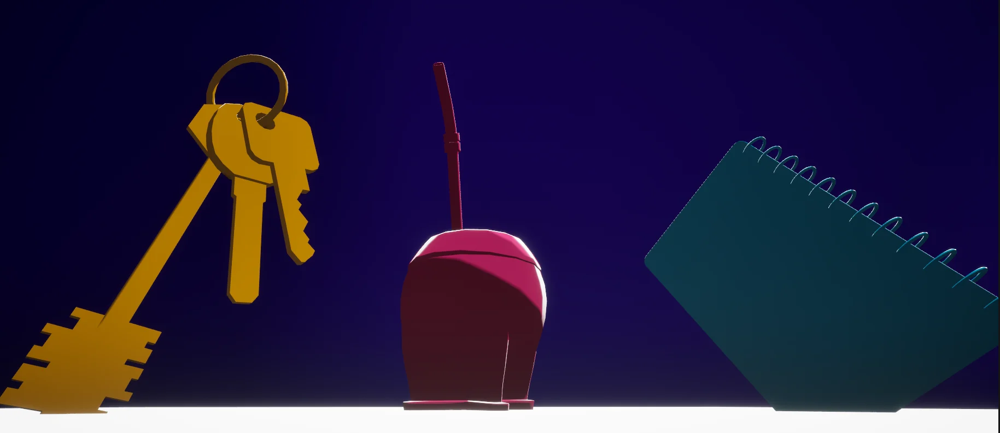
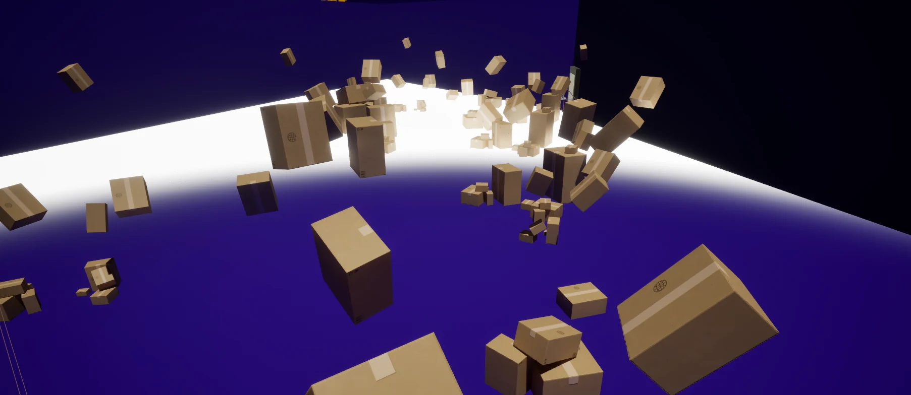
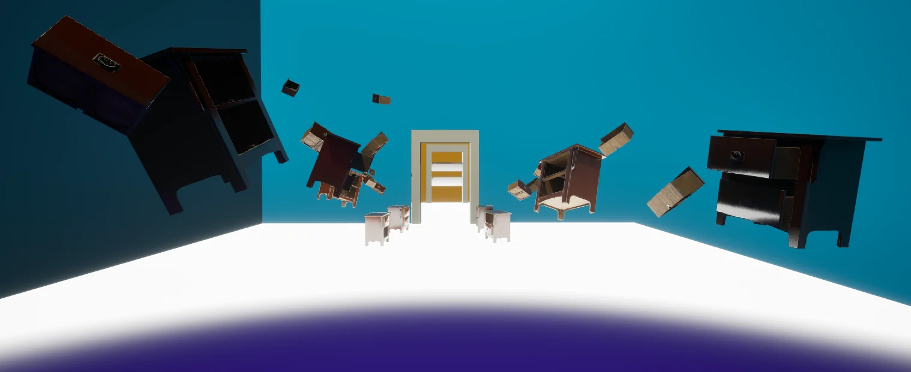
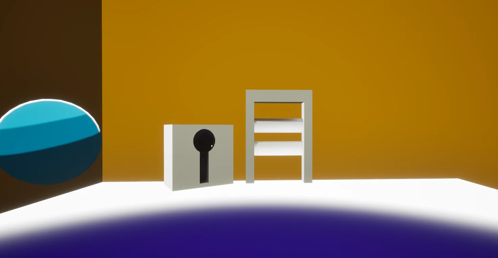
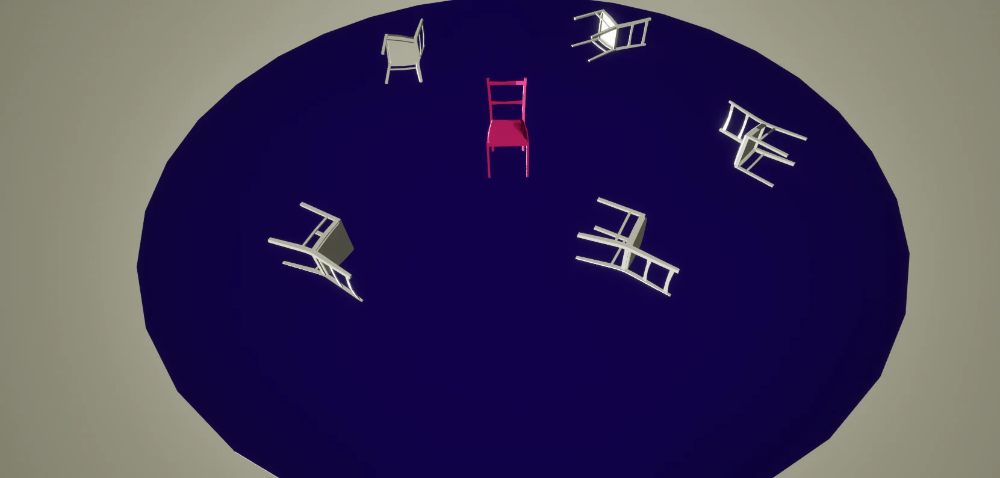
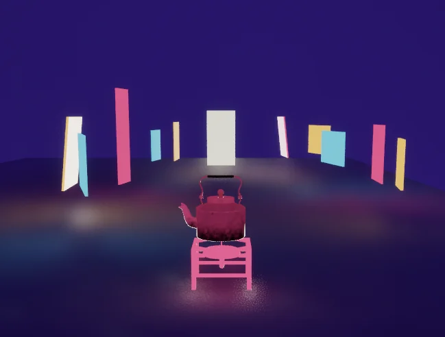

Mundo de la llave
Una experiencia que recrea lo que pasa en tu mente cuando un objeto cotidiano se vuelve importante.
¿Estás dispuesto a buscar en lo que te resulta habitual?
Conocer la experienciaDale una nueva mirada a tu cotidianidad
La idea
Los objetos cotidianos pueden adquirir un significado que trasciende su utilidad.
Algunos cobran un valor muy distinto, y hasta pueden volverse una extensión de nosotros. Lo que hace falta es una relectura: una segunda mirada de eso que dabas por sentado.
Antes de empezar · El espacio físico
Un lugar a oscuras, tres pantallas encendidas.
El lugar está a oscuras, con ruido blanco. Tres computadoras encendidas con luz blanca y el proyector prendido. Cada participante tiene su estación con la experiencia en Unreal; un tótem y un camino de luces conectan lo que pasa en pantalla con el espacio físico.
Hacé clic en los puntos para conocer cada parte
Voz en off
- 1Plasticidad sináptica
- 2El mundo de los objetos
- 3Una extensión del yo
- 4Objetos perdidos
- 5Obsesión con la pérdida
- 6Búsqueda del significado
Proyector
Abre la experiencia con el video de bienvenida: motion de texto y voz en off, con escenas cotidianas donde ciertos objetos se resaltan con color.
Vuelve a encenderse antes de la Etapa 5 y al final, con el video de cierre.
Tótem
En la Etapa 3 cada participante sale un momento de Unreal y deposita acá el objeto que eligió. En la Etapa 4, al volver, solo encuentra humo.
Al final, el tótem guarda esferas físicas (rosa, amarilla y celeste) con los objetos adentro.
Camino de luces LED
Un camino de luces en el piso une las estaciones con el tótem. Se enciende cada vez que hay que salir de Unreal: es el mismo pulso de luz que recorre el pasillo de la Etapa 3.
Tres estaciones
Tres computadoras con luz blanca. En cada una, un participante recorre las seis etapas en Unreal: del desierto de la plasticidad sináptica a la búsqueda del significado.
Holograma Pendiente
En una mesa cercana al tótem. Cuando se deposita el objeto, proyecta un ícono que anticipa la próxima zona del cerebro a transitar: el ícono que permite abrir la puerta de la Etapa 3.
Oculus · Detector de significado
En la Etapa 5 aparecen apoyados al final del pasillo. Con ellos puestos, en la Etapa 6 los objetos se ven en wireframe y hay que encontrar las esferas que brillan.
Plasticidad sináptica
Reorganizar las conexiones

Un desierto con tres objetos gigantes: llaves, mate y cuaderno. Cada esfera flotante suena a uno de ellos; al conectarla con su objeto, los dos se iluminan del mismo color.
Con las tres conexiones, se eleva la cúpula.
El mundo de los objetos
Lo que el objeto vio, escuchó y vivió

Los tres objetos vuelven, gigantes. Se entra a cada uno por una abertura y se recorre su mundo, en orden: primero la llave, después el mate y por último el cuaderno.

Cajas de mudanza de todos los tamaños

Lo que se regala a quien se muda


La cerradura gigante
De vuelta en la cúpula
La llave pasa a blanco y negro. Ahora se colorea el mate: se entra por su base.
Mundo del mate · Escenario 1
El último recreo


Voz 1—Bueno che, al final llegamos. El último recreo del año.
Voz 2—Y el último mate también, ¿lo armo yo?
Voz 3—Uh sí, dale… Espero que este verano no sea como siempre, eh, que nos terminamos viendo de vuelta en marzo en el aula.
Voz 4—Sí, loco, hay que hacer algo.
Voz 2—Dejá, yo no les quiero ver más la cara, después de lo que laburamos este año. risas
Voz 3—Daaa, si después andás diciendo que nos extrañás.

Mundo del mate · Escenario 2
La mañana
pájaros · un bostezo · se abren las persianas
Voz 1—Buen día hijo, ¿cómo estás?
Voz 3—Buen día.
click · se prende la radio
Voz 2—Pasame un mate que ya me tengo que ir a laburar.
Voz 1—Obvio amor, tomá.
Voz 2—Gracias amor.
Voz 1—Que tengas un lindo día.
Voz 2—Ustedes también, los amo.
pasos · rechina una puerta
Voz 2—Bueno, nos vemos a la noche.
De vuelta en la cúpula
El mate pasa a blanco y negro. Último mundo: el cuaderno.
Mundo del cuaderno · Cuaderno de materiales
martillazos · un taladro · un camión da marcha atrás
Mundo del cuaderno · Cuaderno de recetas
algo se bate en un bowl
Voz 1—Va a quedar genial todo el escritorio nuevo.
Voz 2—Sí, primero hay que cambiar el piso, pintar, y último el escritorio.
Voz 1—Va a tardar pero va a quedar impecable. ¿Te repaso lo que anoté?
Voz 2—Dale.
Voz 1—Bueno, primero hay que elegir el modelo del piso, y calcular los m².
Voz 2—Vamos a necesitar un metro, caladora y sellador. Con eso creo que estamos bien.
Voz 1—Y los zócalos, no te olvides.
- elegir el modelo del piso
- calcular los m²
- metro · caladora · sellador
- ¡y los zócalos!
Voz 1 · abu—¡Hola querido! ¿Vamos a hacer una torta hoy?
Voz 2—¡Obvio abu, eso no se pregunta!
Voz 1 · abu—Bueno, escuchá: ahí en el cajón está mi cuadernito, pasámelo y te voy diciendo.
Voz 2—A ver… se abre un cajón ¡Acá está!
Voz 1 · abu—Bueno, primero tenés que agarrar 3 huevos, 1 taza de azúcar y 2 tazas de harina.
Voz 2—¿Y no iba una taza de aceite también?
Voz 1 · abu—Tenés razón, casi me olvido. Después la vainilla, un poco de leche y al horno.
- 3 huevos
- 1 taza de azúcar
- 2 tazas de harina
- 1 taza de aceite
- vainilla · leche · ¡al horno!
Una extensión del yo
El objeto que llevás encima

Pensá en los objetos que llevás encima.
¿Cuál es aquel que puede tener un significado distinto?
Te vamos a dar tiempo.
¿Lo tenés?
Para seguir recorriendo la experiencia, vas a tener que depositar ese objeto en nuestro tótem.
En un pasillo, la voz pide pensar en un objeto que se lleve encima. Hay que salir de Unreal, seguir las luces hasta el tótem y dejarlo ahí. Un holograma muestra el ícono de la puerta.
Con ese ícono se abre la puerta de la cuarta etapa.
Objetos perdidos
Cuando el objeto no está
Un destello blanco y la primera etapa, invertida: de los objetos solo quedan las siluetas y las esferas hablan de cosas perdidas. En el espacio físico, el tótem está vacío y con humo.
El proyector se enciende y habla a los profesores.
Interacción · Etapa 05
El pasillo de objetos
Voz en off
Búsqueda del significado
El detector de significado
Con los Oculus, el mismo escenario se ve en wireframe. Hay que encontrar tres esferas que brillan y suenan; al juntarlas, emerge un tótem donde se depositan.
En el espacio físico, las luces vuelven a llevar al tótem.
El reencuentro
En el tótem, cada participante recibe su objeto dentro de una esfera y el proyector pasa el video final.
Voz en off · video final
Esta última pregunta es para vos, que hiciste el recorrido: queremos saber qué hay detrás del objeto que elegiste, porque ahí empieza la relectura de lo cotidiano.
¿Y ahora, habiendo experimentado nuestro recorrido, te gustaría contarnos por qué elegiste este objeto?